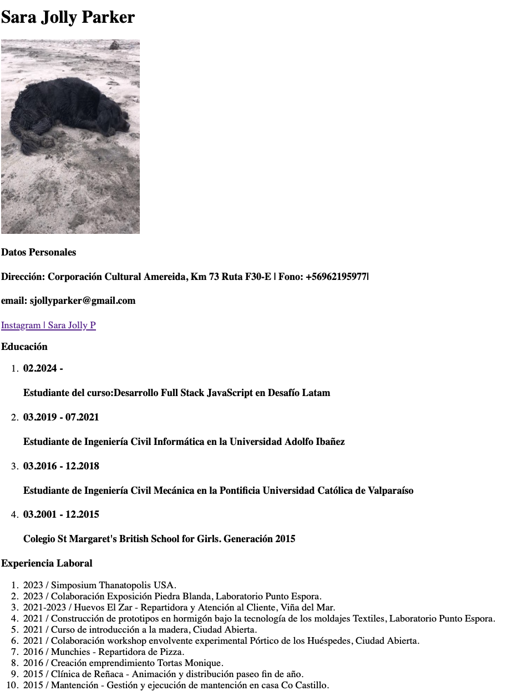
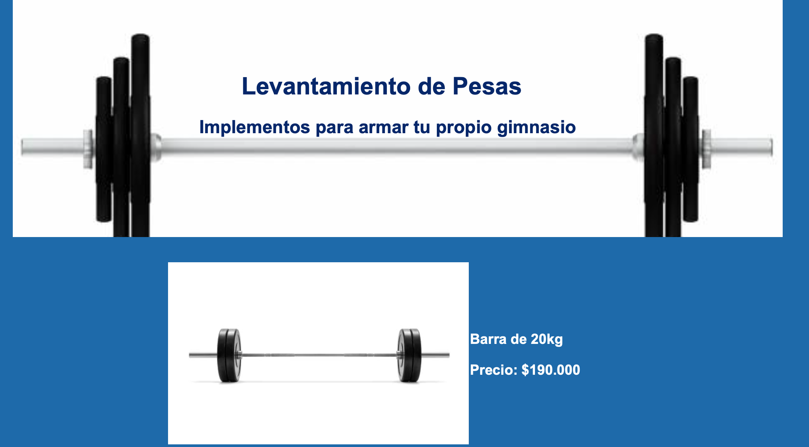
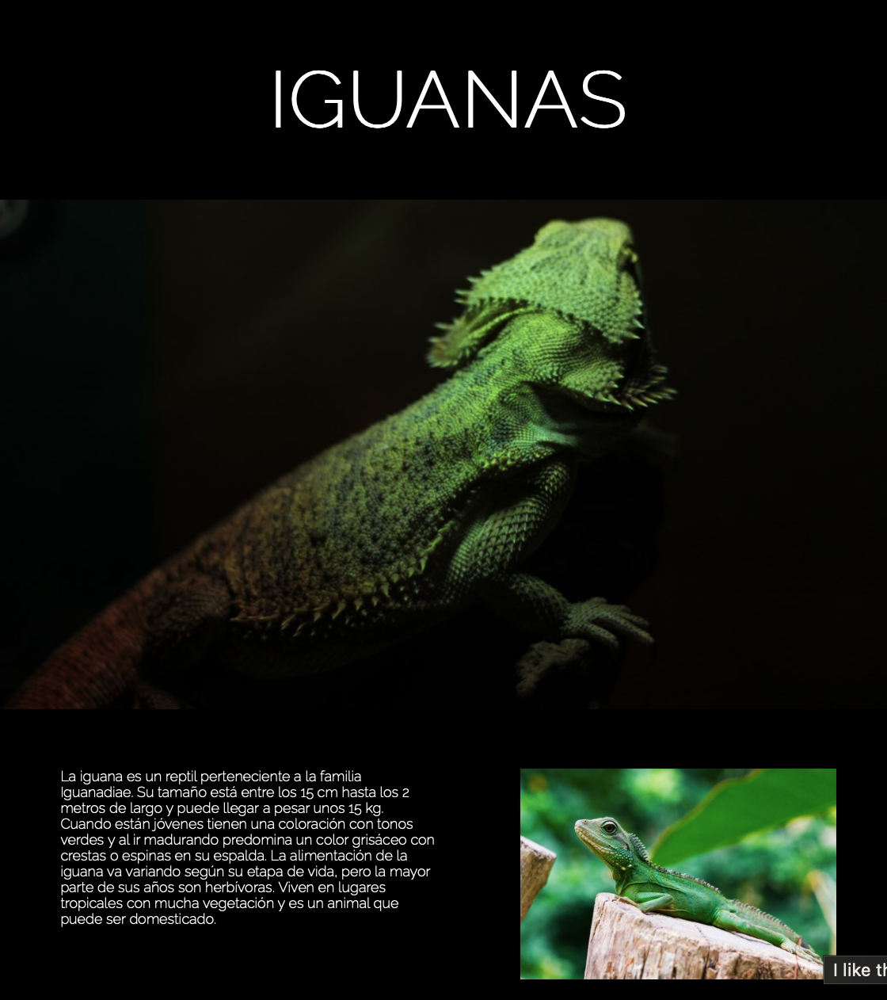
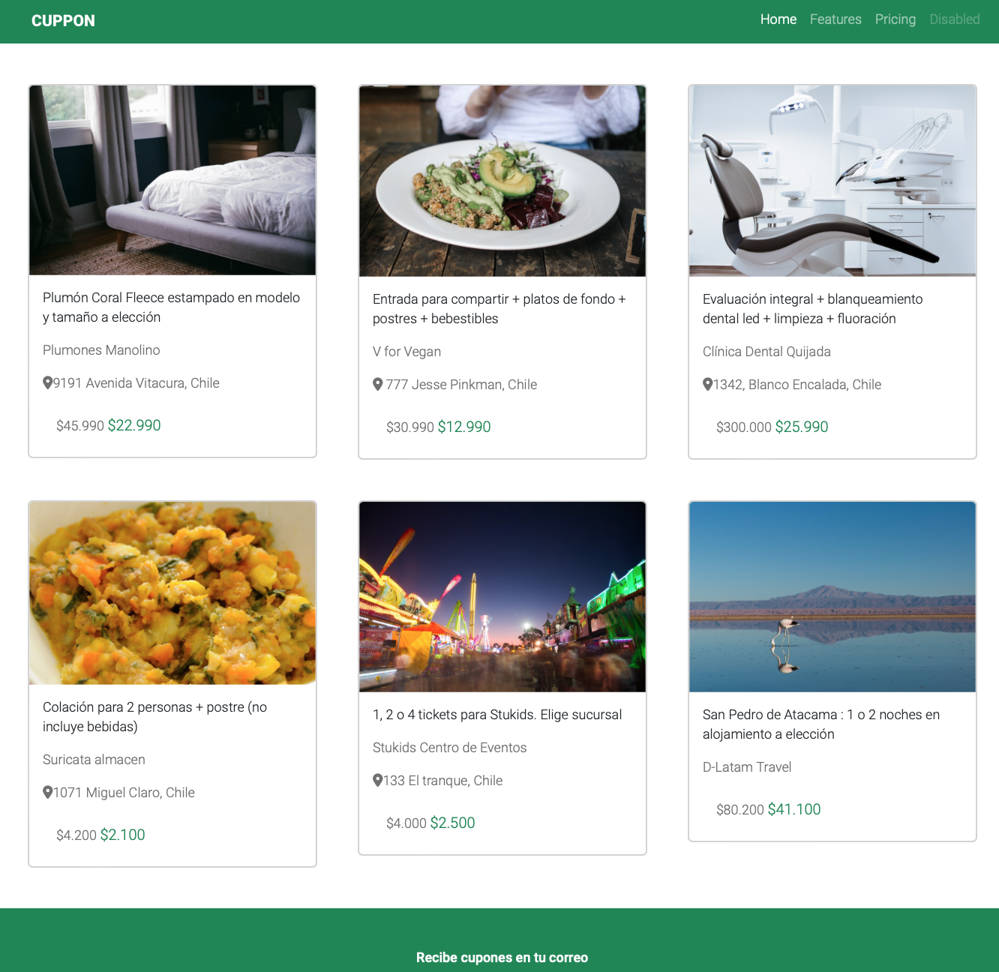

| Proyecto | |
|---|---|
| El primer desafío fue un curriculum bastante burdo |  |
| Luego una página donde se vendía algún producto |  |
| Una página siguiendo las indicaciónes de un cliente y con una maqueta en especifico |  |
| Crear una pagina con Bootstrap y gran cantidad de sus herramientas |  |